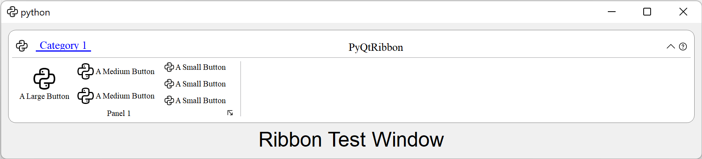

User Manual
Instantiating a RibbonBar
RibbonBar is the main class for creating a ribbon bar.
To begin with, you have to initialize your PyQt application.
Using the RibbonBar
RibbonBar is a class that implements a ribbon bar, you can use it to create a ribbon bar.
import sys
from PyQt5 import QtWidgets, QtGui, QtCore
from ribbon import RibbonBar
from ribbon.utils import data_file_path
if __name__ == "__main__":
app = QtWidgets.QApplication(sys.argv)
app.setFont(QtGui.QFont("Times New Roman", 8))
# Central widget
window = QtWidgets.QMainWindow()
window.setWindowIcon(QtGui.QIcon(data_file_path("icons/python.png")))
centralWidget = QtWidgets.QWidget()
window.setCentralWidget(centralWidget)
layout = QtWidgets.QVBoxLayout(centralWidget)
# Ribbon bar
ribbonbar = RibbonBar()
category = ribbonbar.addCategory("Category 1")
panel = category.addPanel("Panel 1")
panel.addLargeButton("A Large Button", QtGui.QIcon(data_file_path("icons/python.png")))
panel.addMediumButton("A Medium Button", QtGui.QIcon(data_file_path("icons/python.png")))
panel.addMediumButton("A Medium Button", QtGui.QIcon(data_file_path("icons/python.png")))
panel.addSmallButton("A Small Button", QtGui.QIcon(data_file_path("icons/python.png")))
panel.addSmallButton("A Small Button", QtGui.QIcon(data_file_path("icons/python.png")))
panel.addSmallButton("A Small Button", QtGui.QIcon(data_file_path("icons/python.png")))
# Display a label in the main window
label = QtWidgets.QLabel("Ribbon Test Window")
label = QtWidgets.QLabel("Ribbon Test Window")
label.setFont(QtGui.QFont("Arial", 20))
label.setAlignment(QtCore.Qt.AlignCenter)
# Add the ribbon bar and label to the layout
layout.addWidget(ribbonbar, 0)
layout.addWidget(label, 1)
# Show the window
window.resize(1800, 350)
window.show()
sys.exit(app.exec_())
It would be rendered as follows:
{kind=link}
Using the RibbonMainWindow
Alternatively, you can use the RibbonMainWindow which is a QMainWindow that has a ribbon bar.
import sys
from PyQt5 import QtWidgets, QtGui, QtCore
from ribbon import RibbonMainWindow
from ribbon.utils import data_file_path
if __name__ == "__main__":
app = QtWidgets.QApplication(sys.argv)
app.setFont(QtGui.QFont("Times New Roman", 8))
# Main window
window = RibbonMainWindow()
window.setWindowIcon(QtGui.QIcon(data_file_path("icons/python.png")))
# Ribbon bar
ribbonbar = window.ribbonBar()
category = ribbonbar.addCategory("Category 1")
panel = category.addPanel("Panel 1")
panel.addLargeButton("A Large Button", QtGui.QIcon(data_file_path("icons/python.png")))
panel.addMediumButton("A Medium Button", QtGui.QIcon(data_file_path("icons/python.png")))
panel.addMediumButton("A Medium Button", QtGui.QIcon(data_file_path("icons/python.png")))
panel.addSmallButton("A Small Button", QtGui.QIcon(data_file_path("icons/python.png")))
panel.addSmallButton("A Small Button", QtGui.QIcon(data_file_path("icons/python.png")))
panel.addSmallButton("A Small Button", QtGui.QIcon(data_file_path("icons/python.png")))
# Display a label in the main window
label = QtWidgets.QLabel("Ribbon Test Window")
label.setFont(QtGui.QFont("Arial", 20))
label.setAlignment(QtCore.Qt.AlignCenter)
# Add the ribbon bar and label to the layout
window.layout().addWidget(label, 1)
# Show the window
window.resize(1800, 350)
window.show()
sys.exit(app.exec_())
Customize Ribbon Bar
General Setups
|
Set the style of the ribbon. |
Get the total height of the ribbon. |
|
|
Set the total height of the ribbon. |
Show the ribbon. |
|
Hide the ribbon. |
|
Get the visibility of the ribbon. |
|
|
Set the visibility of the ribbon. |
Setup Title
Return the title of the ribbon. |
|
|
Set the title of the ribbon. |
Setup Category Tab Bar
Return the tab bar of the ribbon. |
|
Get the height of the tab bar. |
|
|
Set the height of the tab bar. |
Setup Quick Access Bar
Return the quick access toolbar of the ribbon. |
|
|
Add a button to the quick access bar. |
|
Set the height of the quick access buttons. |
Setup Right Tool Bar
Return the right toolbar of the ribbon. |
|
|
Add a widget to the right button bar. |
|
Set the height of the right buttons. |
Set the icon of the help button. |
|
Remove the help button from the ribbon. |
|
Return the collapse ribbon button. |
|
Set the icon of the min button. |
|
Remove the min button from the ribbon. |
Manage Categories
Return a list of categories of the ribbon. |
|
|
Add a new category to the ribbon. |
|
Add a new category to the ribbon. |
|
Add a new context category to the ribbon. |
|
Show the given category, if it is not a context category, nothing happens. |
|
Hide the given category, if it is not a context category, nothing happens. |
|
Remove a category from the ribbon. |
|
Set the current category. |
Customize Categories
Setup Styles
Return the button style of the category. |
|
Set the button style of the category. |
Manage Panels
|
Add a new panel to the category. |
|
Remove a panel from the category. |
|
Return a panel from the category. |
|
Remove and return a panel from the category. |
Customize Panels
Setup Title Label
Get the title text of the panel. |
|
|
Set the title text of the panel. |
Add Widgets to Panels
|
Add a widget to the panel. |
|
Remove a widget from the panel. |
|
Get the widget at the given index. |
|
Add a small widget to the panel. |
|
Add a medium widget to the panel. |
|
Add a large widget to the panel. |
|
Add a button to the panel. |
|
Add a small button to the panel. |
|
Add a medium button to the panel. |
|
Add a large button to the panel. |
|
Add a toggle button to the panel. |
|
Add a small toggle button to the panel. |
|
Add a medium toggle button to the panel. |
|
Add a large toggle button to the panel. |
|
Add a combo box to the panel. |
|
Add a font combo box to the panel. |
|
Add a line edit to the panel. |
|
Add a text edit to the panel. |
|
Add a plain text edit to the panel. |
|
Add a label to the panel. |
|
Add a progress bar to the panel. |
|
Add a slider to the panel. |
|
Add a spin box to the panel. |
|
Add a double spin box to the panel. |
|
Add a date edit to the panel. |
|
Add a time edit to the panel. |
|
Add a date time edit to the panel. |
|
Add a table widget to the panel. |
|
Add a tree widget to the panel. |
|
Add a list widget to the panel. |
|
Add a calendar widget to the panel. |
|
Add a separator to the panel. |
Add a horizontal separator to the panel. |
|
Add a vertical separator to the panel. |
|
|
Add a gallery to the panel. |